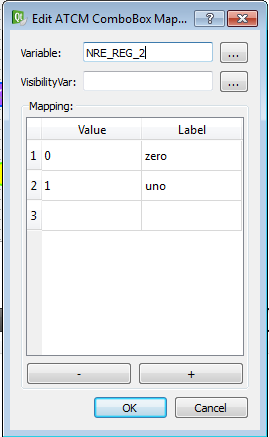

Object to use a combo box.
To use follows the steps:
Draw object on page.
Double click on object and compile the table. In the Value column write the value to pass to PLC and in the Label column write the value for the interface.

Define variable field with Crosstable variable to write/read. Press “…” button to select desired variable.
Define visibilityVar variable with Crosstable variable to read value to show or not the object. Press “…” button to select desired variable.
Check viewStatus variable to have a graphic feedback for reading/writing.